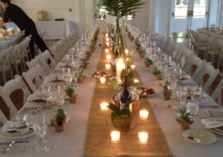

In her younger years, Kelly called Ithaca, New York home. Believing she was a princess, Kelly spent her childhood watching Disney movies, always twirling around the room like Cinderella. As she grew out of her days of being a princess Kelly developed a love for art and working with others. She believes in a hard day’s work and that nothing is impossible. In fact, one time someone told her she couldn’t climb Mount Everest; she did it in four hours. Actually, that's not true, but if anyone could, it’d be Kelly. When Kelly’s not making her friends laugh, she is most likely asking them if they have seen her cell phone. Any friend of Kelly’s will tell you to expect Chinese take-out and a good chick-flick, if you are ever having “one of those days”. In addition to being a former Disney princess and a one-of-a-kind friend, Kelly is also the smile you’ve been waiting to have around the office.

Management
Kelly is the clubhouse manger at the Ithaca Yacht Club. If you ask her staff they would agree, Kelly is the manager everyone is excited to see. She not only runs the show but also makes sure every guest leaves happy with his or her visit.Responsibilities
-
Responsible for creating a positive work environment.
-
Ensures every guest leaves "filled" with joy.
-
The go-to contact for all catered private events.
Event Planning
Kelly is in charge of catering and sales at H&J hospitality. Any event Kelly is responsible for falls nothing short of perfect. Whether it is a corporate function, wedding reception, or huge event for Cornell University, Kelly has got you covered.Responsibilities
-
Planning 101. Done.
-
Experienced organizing and coordinating events.
-
Capable of running large events smoothly.
Camp Director
As a dance camp counselor at Armstrong School of Dance, Kelly was not only in charge of teaching classes, but also responsible for interviewing and hiring fellow instructors. In addition to having fun, any student of Kelly’s class would tell you she also challenged them to do their best.Responsibilities
-
Comfortable taking a leadership role.
-
Able to work effectively in groups.
-
Inspires others to do their best.
-

Reception at Emerson Park
Met directly with clients to discuss and establish the layout and decorations for the reception. Beautifully executed the layout and took action to ensure the reception ran according to plan.
-
Catering at Cornell University
Handled client relations for an outsized catered event. Responsible for organizing the event, delegating tasks for setup and teardown, food distribution, and keeping smiles on guest’s faces.
-
Large Wedding at Emerson Park
Planned, coordinated, and directed the wedding reception. Was in charge of vendor transactions and event organization. Acted to guarantee every wish in pre-planning was fulfilled the day of the event.
{kind=link}
{kind=link}
{kind=link}
Her personality is ever so caring towards all human beings... Her smile is contagious and her enthusiasm sets her apart from the rest. She has a direct focus on her future and will obtain her goals; for her personality would not settle for less.
-Karen A. Gorsky, Armstrong School of Dance.